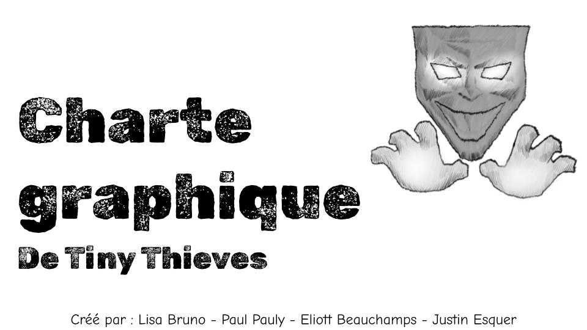
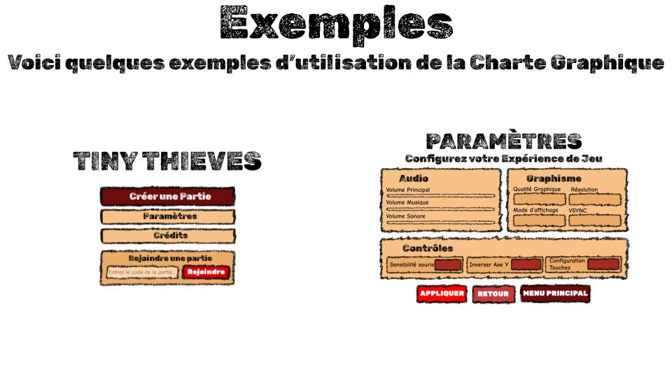

Communication, design et direction artistique
Direction artistique de jeu vidéo
Rendu du projet

Premier univers visuel
Deuxième univers visuel
Comment donner envie d’entrer dans un jeu avant même d’en découvrir l’histoire ? 🎮✨
Pour ce projet de direction artistique de jeu vidéo, j’ai imaginé deux univers visuels avec leurs propres ambiances, couleurs et codes graphiques.
L’objectif ? Construire une identité forte qui donne immédiatement une sensation de monde, de personnage et d’aventure.
Compétences
- Direction artistique
- Création visuelle
- Illustrator
- Photoshop
- Recherche visuelle
DA et fabrication
Créer les identités visuelles de deux jeux vidéo, en développant pour chacun un univers graphique distinct et cohérent.
Explication du projet
Rendu
Une mosaïque de HUD présentant les interfaces et éléments visuels conçus pour les deux jeux vidéo.
Étapes du projet
- Recherche de l univers graphique
- Création des visuels
Étapes du projet
Compétences mobilisées
- Direction artistique
- Création visuelle
- Illustrator
- Photoshop
- Recherche visuelle
Compétences mobilisées